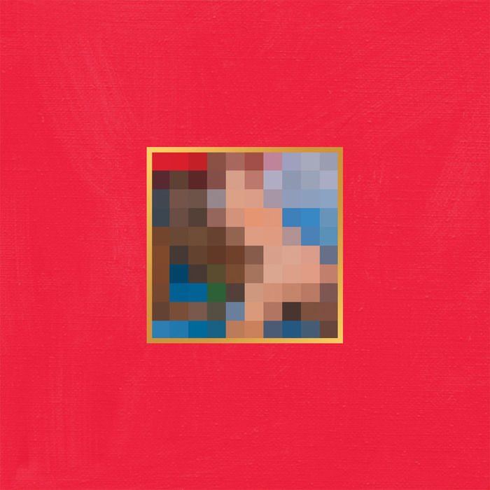
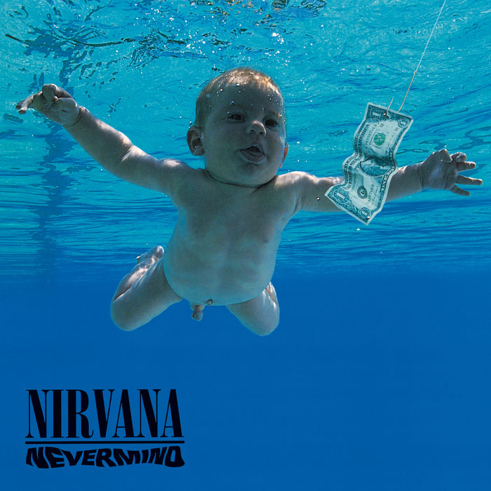
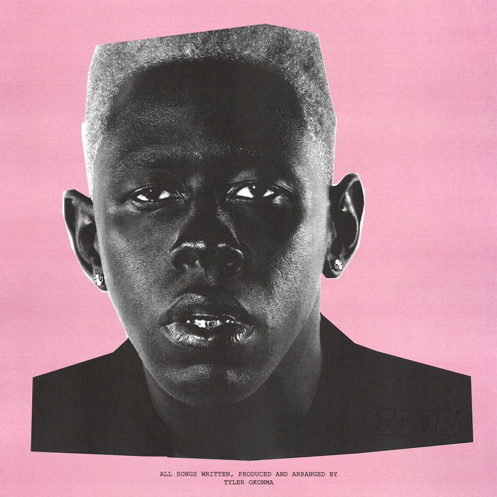
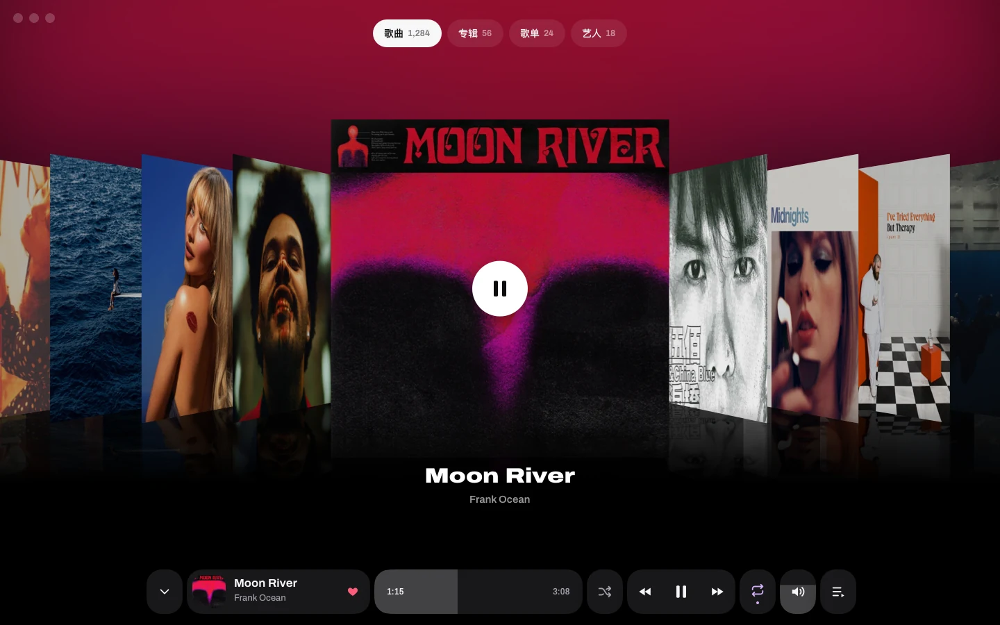
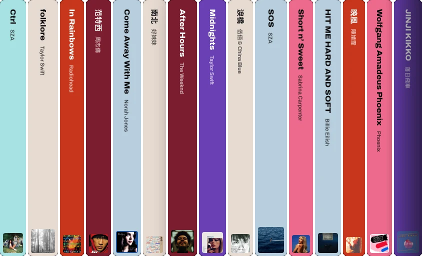

Desktop
macOS
Dynamic Island / notch mini-player with live waveform · Touch Bar · Apple Silicon universal
Free · No ads · No account, ever
A music player that sounds like it costs something and doesn’t. Lyrics that sing along, a player that wears the album, and the whole catalogue, free.
YesPlayMusic is a music player that doesn’t want anything from you. No ads between songs no paywall, no cap on skips. Just every song you’ve ever loved and the ones you haven’t found yet.
YesPlayMusic pulls the colour out of whatever’s playing and repaints itself around it. Player, lyrics, everything. Scroll and watch.
My Beautiful Dark Twisted Fantasy
Kanye West



01 / 04 — Streams
Opushigh quality
The whole catalogue, streamed through your own free worker. Guest — no key, no cap.
Side B · 8 tracks
Turn the sound on up top and each one plays its note.
Open the app and search the whole catalogue. No invite, no email, no human check.
Karaoke-timed lyrics that follow the singer syllable by syllable. Tap a line to jump.
Point it at a folder. Tags, artwork and lyrics are read right in your browser — nothing uploaded.
Real playlists, and mixes built from what you actually play. Reorder the queue mid-song.
Playing Next, play-next, likes, history — the unglamorous parts of a player, done right.
Add the player to your home screen from any browser. App-feel, no store, no update nagging.
No account, no tracking, no cloud. Your library lives in this browser and goes nowhere else.
Your top songs, artists and hours, whenever you want to look — not once a year.
Visuals
A native Flutter desktop app engineered with care. From 3D Coverflow to syllable-timed karaoke lyrics, local music parsing, and sandboxed media servers.



Dynamic Island / notch mini-player with live waveform · Touch Bar · Apple Silicon universal
Snap layouts · DWM extended-frame title bar · working-set memory trim
Wayland-native launch · MPRIS · -lgcc_s unwinder crash fix · discrete GPU rendering
YesPlayMusic is open to everyone. No account, no invite, no email — the whole player is one link away, and it stays free because it runs on free tiers end to end.
Open to everyone · no account · no tracking
Download for your OS
Grab the installer or standalone bundle for Windows, macOS, or Linux.
Add your music & plugins
Point to your local music directory or install plugins for your media servers.
Keep it yours
Your database and cache live locally on your drive. Sandboxed and private.